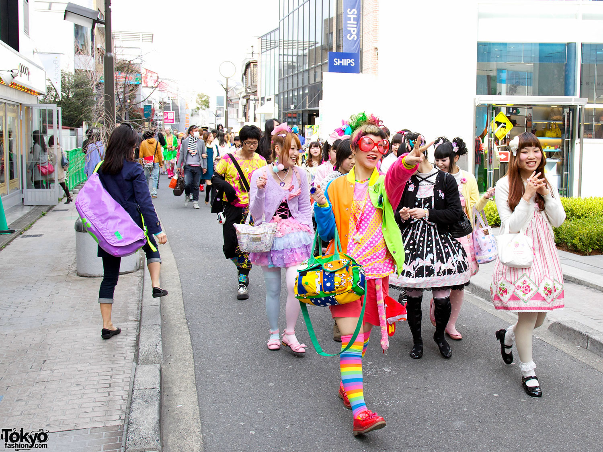

Harajuku Fashion Walk originally started in Tokyo. It's a colorful and inclusive event where everyone can express themselves through their unique style!
Join us as we walk through downtown Vancouver to celebrate Harajuku fashion culture, make new friends, and share kawaii energy with the world!

This photo captures the energy and creativity of a Harajuku Fashion Walk in Tokyo!
Harajuku fashion, originating in Tokyo's Harajuku district, is a vibrant and diverse style characterized by bold colors, playful patterns, and a strong emphasis on individuality and self-expression, often seen as a rebellion against traditional Japanese norms.
Harajuku Style Inspiration
Here are some of the Harajuku fashion styles!
Decora
Lolita
Fairy Kei
Gothic Punk
Gothic
Cyber
Event Details
📅 Date: April 12, 2025 (Saturday)
📍 Location: Vancouver Art Gallery, Downtown Vancouver
We will walk to David Lam Park together after the main gathering!